如果项目中有 cloud/main.js 文件，即为云引擎 2.0 环境。
cloud/main.js
云引擎 2.0 和后续版本（3.0+）的差别主要是应用的目录结构。因为后续版本不再使用沙箱环境，所以不强制 cloud 和 config 等目录结构，只要是一个普通的 Node.js 项目即可。而 SDK 将作为一个普通组件添加到项目中，所以使用方面也有一些变化：
cloud
config
avos-express-cookie-session
cookie-parse
__production
NODE_ENV
staging
production
请参见详细的 升级指南。
云引擎允许你编写 JavaScript、Python 等代码，并部署到 LeanCloud 云端，通过拦截 save 请求，在保存对象之前或之后做一些事情；你可以自定义业务函数，并通过 SDK 调用；你还可以调用部分第三方库来实现自己的业务逻辑，甚至还可以将整个网站架设在云引擎之上，我们提供了网站托管服务。
与旧版云引擎的区别在于：
使用命令行工具可以非常方便地部署和发布云引擎项目，查看项目状态和查看日志，甚至支持多应用部署。具体请参考 命令行工具指南。
首先确认本机已经安装了相关的运行环境和 命令行工具。
命令行界面输入命令创建应用：
$ avoscloud new
根据提示信息输入 appId 等相关信息即可创建一个初始应用。然后进入项目目录：
$ cd <appName>
$ avoscloud
窗口会提示输入 Master Key，该信息可以在 控制台 / 设置 / 应用 Key 中找到。
应用即可启动运行：http://localhost:3000
可以通过下列命令确认云函数工作正常，该函数定义在 $PROJECT_DIR/cloud/main.js 文件中：
$PROJECT_DIR/cloud/main.js
curl -X POST -H "Content-Type: application/json; charset=utf-8" \ -H "X-LC-Id: {{appid}}" \ -H "X-LC-Key: {{appkey}}" \ -H "X-LC-Prod: 0" -d '{}' \ http://localhost:3000/1.1/functions/hello
如果需要指定 web 服务端口，可以增加 -P 参数。获取帮助信息请使用 -h 参数。
-P
-h
部署到预备环境：
$ avoscloud deploy
如果你设置了 二级域名，即可通过 http://stg-${your_app_domain}.leanapp.cn 访问你应用的预备环境。
http://stg-${your_app_domain}.leanapp.cn
部署到生产环境：
$ avoscloud publish
如果你设置了 二级域名，即可通过 http://${your_app_domain}.leanapp.cn 访问你应用的生产环境。
http://${your_app_domain}.leanapp.cn
通过下列命令可以确认云函数在云引擎上工作正常：
curl -X POST -H "Content-Type: application/json; charset=utf-8" \ -H "X-LC-Id: {{appid}}" \ -H "X-LC-Key: {{appkey}}" \ -H "X-LC-Prod: 1" -d '{}' \ https://leancloud.cn/1.1/functions/hello
如果你没有使用项目框架，则需要自己安装和初始化云引擎中间件。
你可以在代码中使用以下与云引擎平台相关的环境变量：
LEANCLOUD_APP_ID
LEANCLOUD_APP_KEY
LEANCLOUD_APP_MASTER_KEY
LEANCLOUD_APP_ENV
development
stage
LEANCLOUD_APP_PORT
LEANCLOUD_APP_INSTANCE
LEANCLOUD_REGION
CN
US
提示：旧版云引擎使用的以 LC_ 开头的环境变量（如 LC_APP_ID）已经被弃用。为了保证代码兼容性，LC_ 变量在一段时间内依然有效，但未来可能会完全失效。为了避免报错，建议使用 LEANCLOUD_ 变量来替换。
LC_
LC_APP_ID
LEANCLOUD_
提示：如果在客户端想调用云引擎的预备环境，各个 SDK 都有类似于 setProduction 的方法，比如 JavaScript SDK · AV.setProduction(production)，其中 production 设置为 0 则该 SDK 将请求预备环境；设置为 1 将请求生产环境，默认为 1。
setProduction
0
1
因为云引擎 2.0 运行在沙箱环境，所以不需要安装和初始化，直接可以在项目中使用。
你可以直接在云引擎上使用我们的 数据存储 服务，相关功能请参考 JavaScript SDK。
当你开发移动端应用时，可能会有下列需求：
这时，你可以使用云引擎的云函数。云函数是一段部署在服务端的代码，编写 JavaScript 或者 Python 代码，并部署到我们的平台上，可以很好的完成上述需求。
你可以使用 在线定义函数 或者 项目定义函数 来开发云函数。在线定义函数操作方便，不需要涉及项目依赖和部署等问题；项目定义函数可以提供更多的灵活性和自主性。
示例项目中 $PROJECT_DIR/cloud/main.js 文件定义了一个很简单的 hello 云函数。现在让我们看一个明显较复杂的例子来展示云引擎的用途。在云端进行计算的一个重要理由是，你不需要将大量的数据发送到设备上做计算，而是将这些计算放到服务端，并返回结果这一点点信息就好。
hello
例如，你写了一个应用，让用户对电影评分，一个评分对象大概是这样：
{ "movie": "夏洛特烦恼", "stars": 5, "comment": "夏洛一梦，笑成麻花" }
stars 表示评分，1-5。如果你想查找《夏洛特烦恼》这部电影的平均分，你可以找出这部电影的所有评分，并在设备上根据这个查询结果计算平均分。但是这样一来，尽管你只是需要平均分这样一个数字，却不得不耗费大量的带宽来传输所有的评分。通过云引擎，我们可以简单地传入电影名称，然后返回电影的平均分。
stars
云函数接收 JSON 格式的请求对象，我们可以用它来传入电影名称。整个 JavaScript SDK 都在云引擎运行环境上有效，可以直接使用，所以我们可以使用它来查询所有的评分。结合在一起，实现 averageStars 函数的代码如下：
averageStars
AV.Cloud.define('averageStars', function(request, response) { var query = new AV.Query('Review'); query.equalTo('movie', request.params.movie); query.find().then(function(results) { var sum = 0; for (var i = 0; i < results.length; ++i) { sum += results[i].get('stars'); } response.success(sum / results.length); }, function() { response.error('movie lookup failed'); }); });
云函数可以被各种客户端 SDK 调用（详见各 SDK 的「调用云引擎」部分），也可以通过 REST API 来调用。例如，用一部电影名称去调用 averageStars 函数：
curl -X POST -H "Content-Type: application/json; charset=utf-8" \ -H "X-LC-Id: {{appid}}" \ -H "X-LC-Key: {{appkey}}" \ -H "X-LC-Prod: 0" \ -d '{"movie":"夏洛特烦恼","stars": 5,"comment": "夏洛一梦，笑成麻花"}' \ https://leancloud.cn/1.1/functions/averageStars
有两个参数会被传入到云函数：
AV.User
X-AVOSCloud-Session-Token: <sessionToken>
sessionToken
AV.Object
如果函数调用成功，云端返回给客户端的结果类似这样：
{ "result": 4.8 }
如果调用有错误，则返回：
{ "code": 141, "error": "搜索失败" }
如有需要，也可以 自定义错误响应码。
在云引擎中也可以使用 AV.Cloud.run 调用 AV.Cloud.define 定义的云函数：
AV.Cloud.run
AV.Cloud.define
AV.Cloud.run('hello', {name: 'dennis'}).then(function(data){ //调用成功，得到成功的应答data }, function(err){ //处理调用失败 });
API 参数详解参见 AV.Cloud.run。
Hook 函数本质上是云函数，但它有固定的名称，定义之后会由系统在特定事件或操作（如数据保存前、保存后，数据更新前、更新后等等）发生时自动触发，而不是由开发者来控制其触发时机。
使用 Hook 函数需要注意 防止死循环调用。
在将对象保存到云端数据表之前，可以对数据做一些清理或验证。例如，一条电影评论不能过长，否则界面上显示不开，需要将其截断至 140 个字符：
AV.Cloud.beforeSave('Review', function(request, response) { var comment = request.object.get('comment'); if (comment) { if (comment.length > 140) { // 截断并添加... request.object.set('comment', comment.substring(0, 137) + '...'); } // 保存到数据库中 response.success(); } else { // 不保存数据，并返回错误 response.error('No comment!'); } });
在数据保存后触发指定操作，比如当一条留言保存后再更新一下所属帖子的评论总数：
AV.Cloud.afterSave('Comment', function(request) { var query = new AV.Query('Post'); query.get(request.object.get('post').id).then(function(post) { post.increment('comments'); post.save(); }, function(error) { throw 'Got an error ' + error.code + ' : ' + error.message; }); });
再如，在用户注册成功之后，给用户增加一个新的属性 from 并保存：
AV.Cloud.afterSave('_User', function(request) { //输出信息请到「应用控制台 / 存储 / 云引擎 / 日志」中查看 console.log(request.object); request.object.set('from','LeanCloud'); request.object.save().then(function(user) { console.log('ok!'); }, function(user, error) { console.log('error', error); }); });
如果 afterSave 函数调用失败，save 请求仍然会返回成功应答给客户端。afterSave 发生的任何错误，都将记录到云引擎日志里。
afterSave
可以到 控制台 / 存储 / 云引擎 / 日志 中查看。
云引擎 2.0 不支持这个 Hook，你需要升级到后续版本来使用它，请参见详细的 升级指南。
在更新对象后执行特定的动作，比如每次修改文章后记录下日志：
AV.Cloud.afterUpdate('Article', function(request) { console.log('Updated article,the id is :' + request.object.id); });
在删除一个对象之前做一些检查工作，比如在删除一个相册 Album 前，先检查一下该相册中还有没有照片 Photo：
AV.Cloud.beforeDelete('Album', function(request, response) { //查询 Photo 中还有没有属于这个相册的照片 var query = new AV.Query('Photo'); var album = AV.Object.createWithoutData('Album', request.object.id); query.equalTo('album', album); query.count().then(function(count) { if (count > 0) { //还有照片，不能删除，调用error方法 response.error('Can\'t delete album if it still has photos.'); } else { //没有照片，可以删除，调用success方法 response.success(); } }, function(error) { response.error('Error ' + error.code + ' : ' + error.message + ' when getting photo count.'); }); });
在被删一个对象后执行操作，例如递减计数、删除关联对象等等。同样以相册为例，这次我们不在删除相册前检查是否还有照片，而是在删除后，同时删除相册中的照片：
AV.Cloud.afterDelete('Album', function(request) { var query = new AV.Query('Photo'); var album = AV.Object.createWithoutData('Album', request.object.id); query.equalTo('album', album); query.find().then(function(posts) { //查询本相册的照片，遍历删除 AV.Object.destroyAll(posts); }, function(error) { console.error('Error finding related comments ' + error.code + ': ' + error.message); }); });
当用户通过邮箱或者短信验证时，对该用户执行特定操作。比如：
AV.Cloud.onVerified('sms', function(request, response) { console.log('onVerified: sms, user: ' + request.object); response.success();
函数的第一个参数是验证类型。短信验证为 sms，邮箱验证为 email。另外，数据库中相关的验证字段，如 emailVerified 不需要修改，系统会自动更新。
sms
email
emailVerified
在用户登录之时执行指定操作，比如禁止在黑名单上的用户登录：
AV.Cloud.onLogin(function(request, response) { // 因为此时用户还没有登录，所以用户信息是保存在 request.object 对象中 console.log("on login:", request.object); if (request.object.get('username') == 'noLogin') { // 如果是 error 回调，则用户无法登录（收到 401 响应） response.error('Forbidden'); } else { // 如果是 success 回调，则用户可以登录 response.success(); } });
请阅读 实时通信概览 · 云引擎 Hook 来了解以下函数的具体用法：
_messageReceived
_receiversOffline
_conversationStart
_conversationAdd
_conversationRemove
在实际使用中有这样一种场景：在 Post 类的 afterUpdate Hook 函数中，对传入的 Post 对象做了修改并且保存，而这个保存动作又会再次触发 afterUpdate，由此形成死循环。针对这种情况，我们为所有 Hook 函数传入的 request.object 对象做了处理，以阻止死循环调用的产生。
Post
afterUpdate
request.object
不过请注意，以下情况还需要开发者自行处理：
fetch
AV.Object.createWithoutData()
对于使用上述方式产生的对象，请根据需要自行调用以下 API：
object.disableBeforeHook()
object.disableAfterHook()
这样，对象的保存或删除动作就不会再次触发相关的 Hook 函数。
AV.Cloud.afterUpdate('Post', function(request) { // 直接修改并保存对象不会再次触发 afterUpdate Hook 函数 request.object.set('foo', 'bar'); request.object.save().then(function(obj) { // 你的业务逻辑 }); // 如果有 fetch 操作，则需要在新获得的对象上调用相关的 disable 方法 // 来确保不会再次触发 Hook 函数 request.object.fetch().then(function(obj) { obj.disableAfterHook(); obj.set('foo', 'bar'); return obj.save(); }).then(function(obj) { // 你的业务逻辑 }); // 如果是其他方式构建对象，则需要在新构建的对象上调用相关的 disable 方法 // 来确保不会再次触发 Hook 函数 var obj = AV.Object.createWithoutData('Post', request.object.id); obj.disableAfterHook(); obj.set('foo', 'bar'); obj.save().then(function(obj) { // 你的业务逻辑 }); });
提示：云引擎 Node.js 环境从 0.3.0 开始支持 object.disableBeforeHook() 和 object.disableAfterHook()。
AV.Cloud.define('errorCode', function(req, res) { AV.User.logIn('NoThisUser', 'lalala', { error: function(user, err) { res.error(err); } }); });
客户端收到的响应：{"code":211,"error":"Could not find user"}
{"code":211,"error":"Could not find user"}
AV.Cloud.define('customErrorCode', function(req, res) { res.error({code: 123, message: 'custom error message'}); });
客户端收到的响应： {"code":123,"error":"自定义错误信息"}
{"code":123,"error":"自定义错误信息"}
为 beforeSave 这类的 hook 函数定义错误码，需要这样：
beforeSave
客户端收到的响应为：Cloud Code validation failed. Error detail : {"code":123, "message": "自定义错误信息"}，然后通过截取字符串的方式取出错误信息，再转换成需要的对象。
Cloud Code validation failed. Error detail : {"code":123, "message": "自定义错误信息"}
云引擎允许你使用 AV.Cloud.httpRequest 函数来发送 HTTP 请求到任意的 HTTP 服务器。不过推荐你使用 request 等第三方模块来处理 HTTP 请求。
AV.Cloud.httpRequest
使用 AV.Cloud.httpRequest ，一个简单的 GET 请求看起来是这样：
AV.Cloud.httpRequest({ url: 'http://www.google.com/' }).then(function(httpResponse) { // 返回的 HTTP 状态码是成功的状态码（例如 200、201 等 2xx）时会被调用 console.log(httpResponse.text); }, function(httpResponse) { console.error('Request failed with response code ' + httpResponse.status); });
如果你想添加查询参数到URL末尾，你可以设置选项对象的 params 属性。你既可以传入一个 JSON 格式的 key-value 对象，像这样：
AV.Cloud.httpRequest({ url: 'http://www.google.com/search', params: { q : 'Sean Plott' } }).then(function(httpResponse) { console.log(httpResponse.text); }, function(httpResponse) { console.error('Request failed with response code ' + httpResponse.status); });
也可以是一个原始的字符串：
AV.Cloud.httpRequest({ url: 'http://www.google.com/search', params: 'q=Sean Plott', }).then(function(httpResponse) { console.log(httpResponse.text); }, function(httpResponse) { console.error('Request failed with response code ' + httpResponse.status); });
通过设置选项对象的 header 属性，你可以发送 HTTP 头信息。假设你想设定请求的 Content-Type，你可以这样做：
Content-Type
AV.Cloud.httpRequest({ url: 'http://www.example.com/', headers: { 'Content-Type': 'application/json' } }).then(function(httpResponse) { console.log(httpResponse.text); }, function(httpResponse) { console.error('Request failed with response code ' + httpResponse.status); });
默认请求超时设置为 10 秒，超过这个时间没有返回的请求将被强制终止，你可以通过 timeout 选项（单位毫秒）调整这个超时，如将请求超时设置为 15 秒：
AV.Cloud.httpRequest({ url: 'http://www.example.com/', timeout: 15000, headers: { 'Content-Type': 'application/json' } }).then(function(httpResponse) { console.log(httpResponse.text); }, function(httpResponse) { console.error('Request failed with response code ' + httpResponse.status); });
通过设置选项对象的 method 属性就可以发送 POST 请求。同时可以设置选项对象的 body 属性来发送数据，例如：
AV.Cloud.httpRequest({ method: 'POST', url: 'http://www.example.com/create_post', body: { title: 'Vote for Pedro', body: 'If you vote for Pedro, your wildest dreams will come true' } }).then(function(httpResponse) { console.log(httpResponse.text); }, function(httpResponse) { console.error('Request failed with response code ' + httpResponse.status); });
这将会发送一个 POST 请求到 http://www.example.com/create_post，body 是被 URL 编码过的表单数据。 如果你想使用 JSON 编码 body，可以这样做：
AV.Cloud.httpRequest({ method: 'POST', url: 'http://www.example.com/create_post', headers: { 'Content-Type': 'application/json' }, body: { title: 'Vote for Pedro', body: 'If you vote for Pedro, your wildest dreams will come true' } }).then(function(httpResponse) { console.log(httpResponse.text); },function(httpResponse) { console.error('Request failed with response code ' + httpResponse.status); });
当然，body 可以被任何想发送出去的 String 对象替换。
传给 success 和 error 函数的应答对象包括下列属性：
status
headers
text
buffer
data
如果你不想要 text（会消耗资源做字符串拼接）只需要 buffer，那么可以设置请求的 text 选项为 false：
AV.Cloud.httpRequest({ method: 'POST', url: 'http://www.example.com/create_post', text: false, ...... });
首先，请进入 控制台 /（选择应用）/ 存储 / 云引擎 界面，可以看到左侧菜单：
很多人使用云引擎是为了在服务端提供一些个性化的方法供各终端调用，而不希望关心诸如代码托管、npm 依赖管理等问题。为此我们提供了在线维护云函数的功能。
使用此功能，你需要注意：
左上角的 创建函数 可以新创建一个函数。中间部分是已经创建好的函数，并可以进行一些维护操作。
函数类型有：
AV.Cloud.beforeSave
这些函数的使用场景和具体细节，参见 云函数。
如果需要创建一个新的函数，可以点击 创建函数 按钮，你将看到如下窗口：
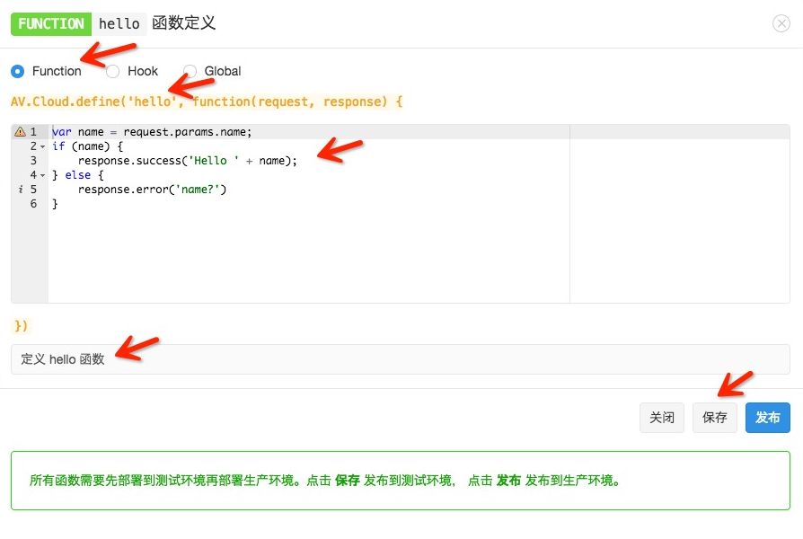
你需要设置的部分包括：
AV.Cloud.define(...)
你可以在代码框中填入下列代码：
var name = request.params.name; if (name) { response.success('Hello ' + name); } else { response.error('name?') }
若想发送 HTTP 请求，请参考下文的 发送 HTTP 请求。
点击保存后，云引擎会在后台编译、保存，并将代码部署到预备环境，这个过程可能需要十几秒钟的时间，请耐心等待。过程全部完成后，页面上方会提示「已更新到预备环境」；如果有错误（比如编译错误）则会出现类似提示：加载代码出错: SyntaxError: Unexpected token )。
加载代码出错: SyntaxError: Unexpected token )
如果函数部署「预备环境」成功，就可以点击 发布 按钮将函数发布到「生产环境」。同样该过程可能需要十几秒钟的时间，请耐心等待。全部完成后，页面上方会提示「已发布到生产环境」。
对于某个函数，可能生产环境运行一个版本，而预备环境正在开发一个新的版本，两个环境的代码是不一致的，这时函数列表页面相关函数的 预备环境 按钮会变成蓝色：
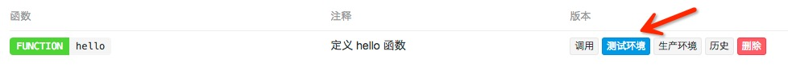
当你在预备环境开发完成，点击 发布 后，两个环境的代码将会统一，这时 预备环境 按钮变为灰色。
如果需要测试，可以点击相应函数的 调用 按钮，你将看到如下窗口：
选择调用环境，并输入调用参数，点击「运行」按钮即可看到调用结果。如果调用返回的 Http Status Code 不是 200，则页面上方会提示相关错误信息。
Http Status Code
200
如果你想看某个函数之前曾经部署过的代码，可以在函数列表页面点击 历史 按钮，将会弹出类似下面的窗口：
你可以点击时间来查看不同时间部署的代码。
如果你确定某个函数已经不再需要，可以在函数列表页面点击 删除 按钮将其删除。删除后该函数和其所有历史记录都将被删除，而且不能恢复。删除动作会重新部署预备和生产环境，这个过程可能需要十几秒钟的时间，请耐心等待。
如果你希望有更强的灵活性，或者希望使用主机托管功能实现自己的站点，甚至网站托管，你可以通过项目代码的方式管理自己的云引擎。
<appName> ├── README.md ├── cloud │ └── main.js ├── config │ └── global.json └── public └── index.html
其中，cloud 目录下有一个 main.js，这就是你的业务逻辑代码存放的地方，简单举个例子：
main.js
// Use AV.Cloud.define to define as many cloud functions as you want. // For example: AV.Cloud.define('hello', function(request, response) { response.success('Hello world!'); });
这段代码定义了一个名为 hello 的函数，它简单的返回应答 Hello world!。
Hello world!
global.json
在 Cloud 目录下多了 app.js 文件和 \views 目录：
Cloud
app.js
\views
<appName> ├── README.md ├── cloud │ ├── app.js │ ├── main.js │ └── views │ └── hello.ejs ├── config │ └── global.json └── public └── index.html
并且 cloud/main.js 里还多了一行代码，用来加载 app.js：
require('cloud/app.js');
代码部署的过程请参考 部署。
你的项目需要遵循一定格式才会被云引擎识别并运行。
云引擎 2.0 的项目必须有 $PROJECT_DIR/cloud/main.js 文件，该文件为整个项目的启动文件。
云引擎项目在部署启动时，部署服务会对新启动的应用进行 ping 监测（每隔 1 秒请求一次，一共 15 次），请求 URL 为 /__engine/1/ping，如果响应的 statusCode 为 200 则认为新的节点启动成功，整个部署才会成功；否则会收到 应用启动检测失败 类型的错误信息，导致部署失败。
ping
/__engine/1/ping
statusCode
云引擎 2.0 沙箱环境内置了该 URL 的处理，所以不需要做额外操作。
因为云引擎 2.0 是运行在沙箱环境，所以不支持其他的 Web 框架。只能使用预定义的 Express 3.x。
使用命令行工具可以非常方便地部署、发布应用，查看应用状态，查看日志，甚至支持多应用部署。具体使用请参考 命令行工具指南。
除此之外，还可以使用 git 仓库部署。你需要将项目提交到一个 git 仓库，我们并不提供源码的版本管理功能，而是借助于 git 这个优秀的分布式版本管理工具。我们推荐你使用 CSDN Code 平台、Github 或者 BitBucket 这样第三方的源码托管网站，也可以使用你自己搭建的 git 仓库（比如 gitlab.org）。
CSDN Code 是国内非常优秀的源码托管平台，你可以使用这个平台提供公有仓库和有限的私有仓库完成对代码的管理功能。以下是该平台与 LeanCloud 云引擎结合的一个例子。
首先在 CSDN Code 上创建一个项目：
提示：在已经有项目代码的情况下，一般不推荐 使用 README 文件初始化项目。
接下来按照给出的提示，将源代码 push 到这个代码仓中：
cd ${PROJECT_DIR} git init git add * git commit -m "first commit" git remote add origin git@code.csdn.net:${yourname}/test.git git push -u origin master
我们已经将源码成功推送到 CSDN Code 平台，接下来到 LeanCloud 云引擎的管理界面填写下你的 git 地址（请注意，一定要填写以 git@ 开头的地址，我们暂不支持 https 协议 clone 源码）并点击 save 按钮保存：
git@
添加 deploy key 到你的 CSDN Code 平台项目上（deploy key 是我们云引擎机器的 ssh public key）保存到 项目设置 / 项目公钥 中，创建新的一项 avoscloud：
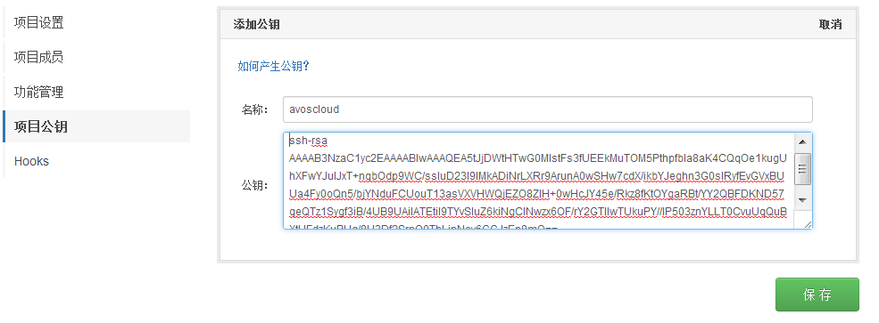
下一步，部署源码到预备环境，进入 云引擎 / Git 部署 菜单，点击「部署到开发环境」的部署按钮：
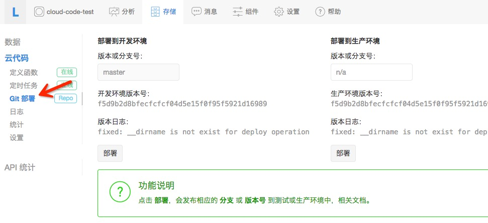
部署成功后，可以看到开发环境版本号从 undeploy 变成了当前提交的源码版本号。
使用 BitBucket 与此类似，不再赘述。
Github 是一个非常优秀的源码托管平台，你可以使用它的免费账号，那将无法创建私有仓库（bucket 可以创建私有仓库），也可以付费成为高级用户，可以创建私有仓库。
首先在 Github上创建一个项目，比如就叫 test：
test
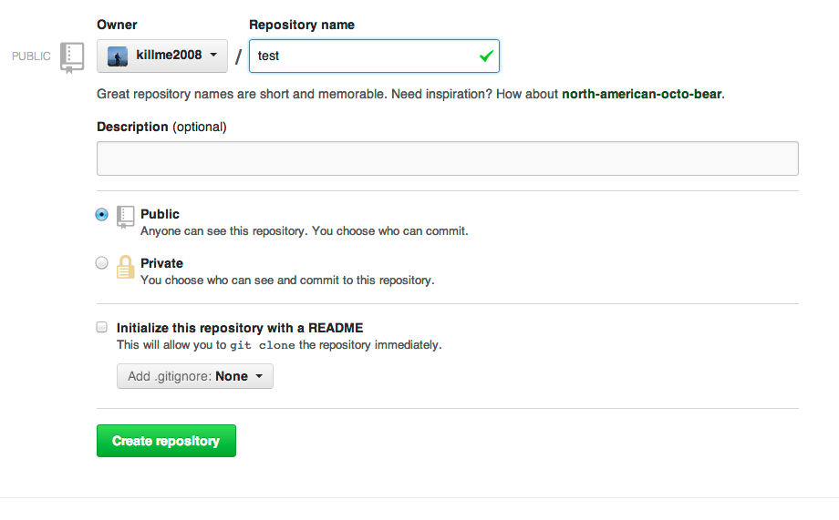
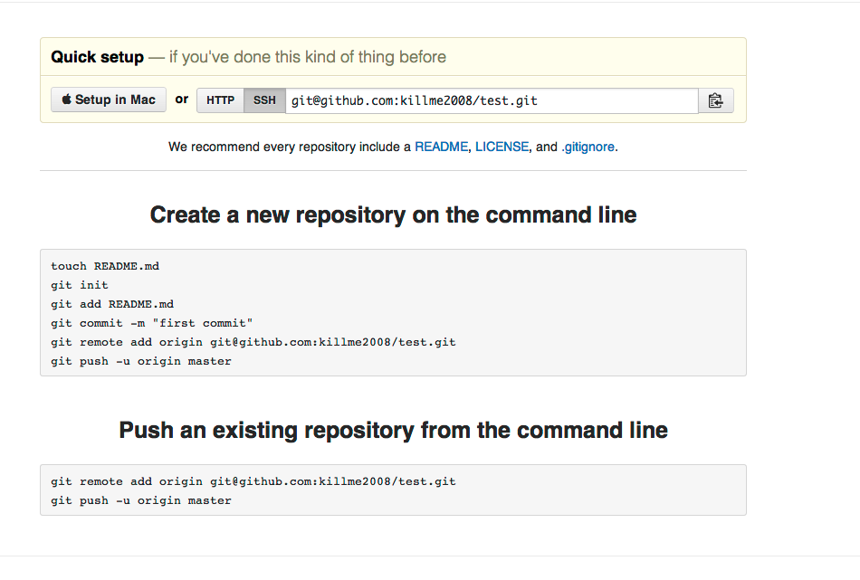
接下来按照 Github 给出的提示，我们将源码 push 到这个代码仓库：
cd ${PROJECT_DIR} git init git add * git commit -m "first commit" git remote add origin git@github.com:${yourname}/test.git git push -u origin master
到这一步我们已经将源码成功 push 到 Github，接下来到云引擎的管理界面填写下你的 git 地址（请注意，一定要填写以 git@ 开头的地址，我们暂不支持 https 协议 clone 源码）并点击 save 按钮保存：
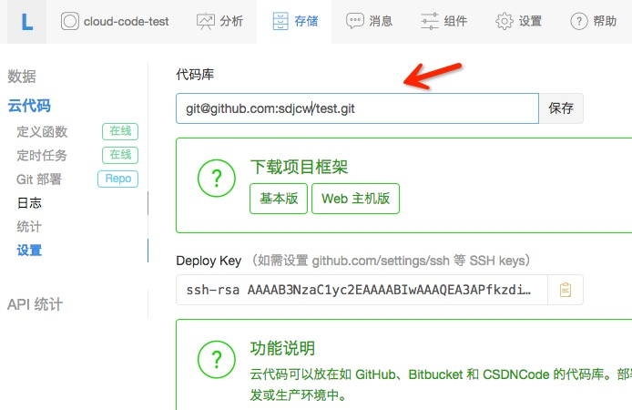
并添加 deploy key 到你的 github 项目（deploy key 是我们云引擎机器的 ssh public key），如果你是私有项目，需要设置 deploy key，
拷贝 设置 菜单里的 Deploy key 保存到 github setting 里的 deploy key，创建新的一项 avoscloud：
下一步，部署源码到预备环境，进入 云引擎 / Git 部署 菜单，点击 部署到开发环境 的部署按钮：
很多用户自己使用 Gitlab搭建了自己的源码仓库，有朋友会遇到无法部署到 LeanCloud 的问题，即使设置了 Deploy Key，却仍然要求输入密码。
可能的原因和解决办法如下：
!
*
sudo service ssh restart
ssh-rsa AAAAB3NzaC1yc2EAAAABIwAAAQEA5EZmrZZjbKb07yipeSkL+Hm+9mZAqyMfPu6BTAib+RVy57jAP/lZXuosyPwtLolTwdyCXjuaDw9zNwHdweHfqOX0TlTQQSDBwsHL+ead/p6zBjn7VBL0YytyYIQDXbLUM5d1f+wUYwB+Cav6nM9PPdBckT9Nc1slVQ9ITBAqKZhNegUYehVRqxa+CtH7XjN7w7/UZ3oYAvqx3t6si5TuZObWoH/poRYJJ+GxTZFBY+BXaREWmFLbGW4O1jGW9olIZJ5/l9GkTgl7BCUWJE7kLK5m7+DYnkBrOiqMsyj+ChAm+o3gJZWr++AFZj/pToS6Vdwg1SD0FFjUTHPaxkUlNw== App dxzag3zdjuxbbfufuy58x1mvjq93udpblx7qoq0g27z51cx3's cloud code deploy key
其中最后 76 个字符：
App dxzag3zdjuxbbfufuy58x1mvjq93udpblx7qoq0g27z51cx3's cloud code deploy key
就是 comment，删除这段字符串后的 deploy key（如果没有这个字样的comment无需删除）保存到 gitlab 即可正常使用：
ssh-rsa AAAAB3NzaC1yc2EAAAABIwAAAQEA5EZmrZZjbKb07yipeSkL+Hm+9mZAqyMfPu6BTAib+RVy57jAP/lZXuosyPwtLolTwdyCXjuaDw9zNwHdweHfqOX0TlTQQSDBwsHL+ead/p6zBjn7VBL0YytyYIQDXbLUM5d1f+wUYwB+Cav6nM9PPdBckT9Nc1slVQ9ITBAqKZhNegUYehVRqxa+CtH7XjN7w7/UZ3oYAvqx3t6si5TuZObWoH/poRYJJ+GxTZFBY+BXaREWmFLbGW4O1jGW9olIZJ5/l9GkTgl7BCUWJE7kLK5m7+DYnkBrOiqMsyj+ChAm+o3gJZWr++AFZj/pToS6Vdwg1SD0FFjUTHPaxkUlNw==
定时任务可以按照设定，以一定间隔自动完成指定动作，比如半夜清理过期数据，每周一向所有用户发送推送消息等等。定时任务的最小时间单位是秒，正常情况下时间误差都可以控制在秒级别。
原来提供的 AV.Cloud.setInterval 和 AV.Cloud.cronjob 都已经废弃，这两个函数的功能变成和 AV.Cloud.define 一样，已经定义的任务会自动帮你做转换并启动。
AV.Cloud.setInterval
AV.Cloud.cronjob
定时任务是普通的云函数。比如定义一个打印循环打印日志的任务 log_timer：
log_timer
AV.Cloud.define('log_timer', function(req, res){ console.log('Log in timer.'); return res.success(); });
部署云引擎之后，进入 控制台 > 存储 > 云引擎 > 定时任务，在右侧页面中选择 创建定时器，然后设定其所执行的函数名称、执行环境等等。
定时器创建后，其状态为未运行，需要点击 启用 来激活。之后其执行日志可以通过 其它 > 日志 查看。
定时任务分为两类：
以 Cron 表达式为例，比如每周一早上 8 点准时发送推送消息给用户：
AV.Cloud.define('push_timer', function(req, res){ AV.Push.send({ channels: [ 'Public' ], data: { alert: 'Public message' } }); return res.success(); });
创建定时器的时候，选择 Cron 表达式 并填入 0 0 8 ? * MON。
0 0 8 ? * MON
Cron 表达式的基本语法为：
<秒> <分钟> <小时> <日期 day-of-month> <月份> <星期 day-of-week> <年>
, - * /
, - * ? / L W
, - * ? / L #
特殊字符的用法：
<分钟>
?
<日期>
<星期>
-
<小时>
,
/
<秒>
L
W
#
各字段以空格或空白隔开。JAN-DEC、SUN-SAT 这些值不区分大小写，比如 MON 和 mon 效果一样。更详细的使用方法请参考 Quartz 文档（英文）。
举例如下：
0 0/5 * * * ?
10 0/5 * * * ?
0 30 10-13 ? * WED,FRI
0 0/30 8-9 5,20 * ?
定时器执行后的日志会记录在 控制台 > 存储 > 云引擎 > 其它 > 日志 中，以下为常见的错误信息及原因。
云引擎可以有超级权限，使用 master key 调用所有 API，因此会忽略 ACL 和 Class Permission 限制。你只需要使用下列代码来初始化 SDK：
//参数依次为 AppId, AppKey, MasterKey AV.initialize('{{appid}}', '{{appkey}}', '{{masterkey}}'); AV.Cloud.useMasterKey();
如果在你的服务端环境里也想做到超级权限，也可以使用该方法初始化。
注意：云引擎 2.0 版本已经默认使用 master key 初始化 SDK，所以不需要额外初始化。
生产环境和预备环境的定时器数量都限制在 5 个以内，也就是说你总共最多可以创建 10 个定时器。
请求云引擎上的云函数时会经过负载均衡设备，该设备会限制一次请求的超时时间为 15 秒，如果超过 15 秒没有返回，请求将被强制停止，但此时云引擎的方法可能仍在执行，但执行完毕后的响应是无意义的。所有 Hook 函数，如 beforeSave 和 afterSave 的超时时间限制在 3 秒内。如果 Hook 函数被其他的云函数调用（比如因为 save 对象而触发 beforeSave 和 afterSave），那么它们的超时时间会进一步被其他云函数调用的剩余时间限制。例如，如果一个 beforeSave 函数是被一个已经运行了 13 秒的云函数触发，那么 beforeSave 函数就只剩下 2 秒的时间来运行，而正常情况下是 3 秒的限制。
网站托管的动态请求超时也被限定为 15 秒。
云引擎 / 日志，可以查看云引擎的部署和运行日志，还可以选择查看的日志级别：
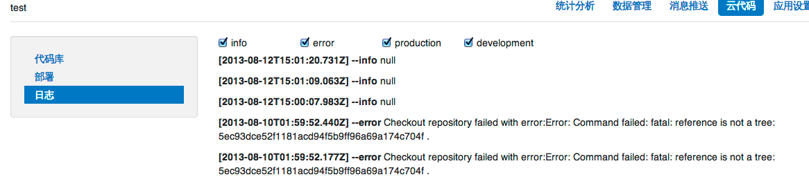
如果你想打印日志到里面查看，可以直接输出到「标准输出」或者「标准错误」，这些信息会分别对应日志的 info 和 error 级别，比如下列代码会在 info 级别记录参数信息：
info
error
AV.Cloud.define('Logger', function(request, response) { console.log(request.params); response.success(); });
注意：日志单行最大 4096 个字符，多余部分会被丢弃；日志输出频率大于 600 行/分钟，多余的部分会被丢弃。
很多时候，除了运行在移动设备的应用之外，你通常也会为应用架设一个网站，可能只是简单地展现应用的信息并提供 App Store 或者 Play 商店下载链接，或者展示当前热门的用户等等。你也可能建设一个后台管理系统，用来管理用户或者业务数据。
这一切都需要你去创建一个 web 应用，并且从 VPS 厂商那里购买一个虚拟主机来运行 web 应用，你可能还需要去购买一个域名。
不过现在，云引擎为你提供了网站托管功能，可以让你为应用设置一个二级域名 ${your_app_domain}.leanapp.cn（美国区为 ${your_app_domain}.avosapps.us ），并把你的 web 应用部署到该域名之下运行，同时支持静态资源和动态请求服务。
${your_app_domain}.leanapp.cn
${your_app_domain}.avosapps.us
首先，你需要到 云引擎 / 设置 页面找到 Web 主机域名，在这里填写你的域名：
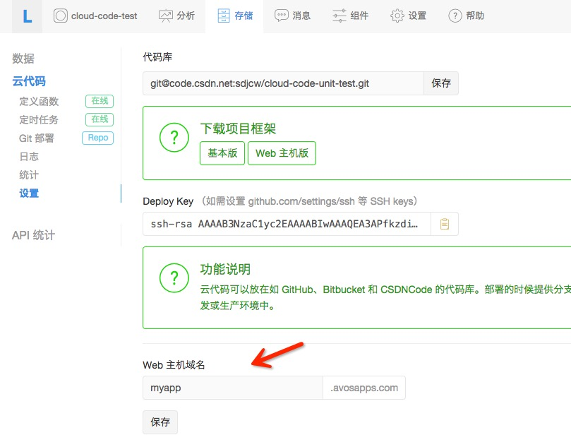
上面将应用的二级域名设置为 myapp，设置之后，你应该可以马上访问：
可能因为 DNS 生效延迟暂时不可访问，请耐心等待或者尝试刷新 DNS 缓存，如果还没有部署，你看到的应该是一个 404 页面。
备案之前要求云引擎已经部署，并且网站内容和备案申请的内容一致。仅使用云引擎托管静态文件、未使用其他 LeanCloud 服务的企业用户，需要自行完成域名备案工作。
如果需要备案，进入 应用控制台 > 账号设置 > 域名备案，按照步骤填写资料即可。
国内节点绑定独立域名需要有 ICP 备案，只有主域名需要备案，二级子域名不需要备案；如果没有 ICP 备案，请参考 域名备案。
如果需要域名绑定，进入 应用控制台 > 账号设置 > 域名绑定，按照步骤填写资料即可。
public 目录下的资源将作为静态文件服务，例如，public/index.html 就可以通过 http://${your_app_domain}.leanapp.cn/index.html 访问到这个文件。
public
public/index.html
http://${your_app_domain}.leanapp.cn/index.html
通常，你会将资源文件按照类型分目录存放，比如 css 文件放在 stylesheets 目录下，将图片放在 images 目录下，将 javascript 文件放在 js 目录下，云引擎同样能支持这些目录的访问。
stylesheets
images
js
例如，public/stylesheets/app.css 可以通过 http://${your_app_domain}.leanapp.cn/stylesheets/app.css 访问到。
public/stylesheets/app.css
http://${your_app_domain}.leanapp.cn/stylesheets/app.css
在你的HTML文件里引用这些资源文件，使用相对路径即可，比如在 public/index.html 下引用 app.css：
app.css
<link href="stylesheets/app.css" rel="stylesheet">
默认静态资源的 Cache-Control 是 max-age=0，这样在每次请求静态资源的时候都会去服务端查询是否更新，如果没有更新返回 304 状态码。你还可以在 app.listen 的时候传入选项，设置静态资源的 maxAge：
Cache-Control
max-age=0
app.listen
//设置 7 天不过期 app.listen({'static': {maxAge: 604800000}});
请注意 maxAge 的单位是毫秒，这样 cache-control 头会变成 max-age=604800。更多 static 选项参考 static middleware。
maxAge
max-age=604800
如果只是展现静态资源，你可能使用 Github Pages 类似的免费服务也能做到，但是云引擎提供的网站托管功能同时支持动态请求。这是通过编写 Node.js 代码，基于express.js 这个 Web MVC 框架做到的。
请参考 express.js 官方文档 框架来学习。
在下载的项目框架 cloud/app.js 中，我们可以看到一个初始代码：
cloud/app.js
// 在云引擎里初始化express框架 var express = require('express'); var app = express(); var name = require('cloud/name.js'); // App全局配置 app.set('views','cloud/views'); //设置模板目录 app.set('view engine', 'ejs'); // 设置template引擎 app.use(express.bodyParser()); // 读取请求body的中间件 //使用express路由API服务/hello的http GET请求 app.get('/hello', function(req, res) { res.render('hello', { message: 'Congrats, you just set up your app!' }); }); //最后，必须有这行代码来使express响应http请求 app.listen();
我们使用 ejs 模板来渲染 view，默认的模板都放在 views 目录下，比如这里 hello.ejs:
ejs
views
hello.ejs
<%= message %>
简单地显示 message 内容。你还可以选用 jade 这个模板引擎：
app.set('view engine', 'jade');
你可以参照上面的 部署 章节来部署这个框架代码，部署成功之后，直接可以访问 http://${your_app_domain}.leanapp.cn/hello 将看到展示的 message：
http://${your_app_domain}.leanapp.cn/hello
Congrats, you just set up your app!
更多复杂的路由和参数传递，请看 express.js 框架文档。
我们还提供了一个在线 Demo：http://myapp.leanapp.cn/，源码 开放供大家参考。
自定义 404 页面在云引擎里比较特殊，假设我们要渲染一个 404 页面，必须将下列代码放在 app.listen() 之后：
app.listen()
// 在 app.listen(); 之后 app.use(function(req, res, next){ res.status(404).render('404', {title: 'Sorry, the page cannot be found.'}); });
如果你想获取客户端的 IP，可以直接从用户请求的 HTTP 头的 x-real-ip 字段获取。
x-real-ip
在云引擎里上传文件也很容易，首先配置应用使用 bodyParser 中间件，它会将上传表单里的文件存放到临时目录并构造一个文件对象放到 request.files 里：
app.use(express.bodyParser());
使用表单上传文件，假设文件字段名叫 iconImage：
<form enctype="multipart/form-data" method="post" action="/upload"> <input type="file" name="iconImage"> <input type="submit" name="submit" value="submit"> </form>
上传文件使用 multipart 表单，并 POST 提交到 /upload 路径下。
/upload
接下来定义文件上传的处理函数，使用受到严格限制并且只能读取上传文件的 fs 模块：
fs
var fs = require('fs'); app.post('/upload', function(req, res){ var iconFile = req.files.iconImage; if(iconFile){ fs.readFile(iconFile.path, function(err, data){ if(err) return res.send('读取文件失败'); var base64Data = data.toString('base64'); var theFile = new AV.File(iconFile.name, {base64: base64Data}); theFile.save().then(function(theFile){ res.send('上传成功！'); }); }); }else res.send('请选择一个文件。'); });
上传成功后，即可在数据管理平台里看到你所上传的文件。
假设你创建了一个支持 web 主机功能的云引擎项目，在 app.js 里添加下列代码：
var express = require('express'); var app = express(); var avosExpressCookieSession = require('avos-express-cookie-session'); // App全局配置 app.set('views','cloud/views'); //设置模板目录 app.set('view engine', 'ejs'); // 设置template引擎 app.use(express.bodyParser()); // 读取请求body的中间件 // 启用 cookieParser app.use(express.cookieParser('Your Cookie Secure')); // 使用 avos-express-cookie-session 记录登录信息到 cookie app.use(avosExpressCookieSession({ cookie: { maxAge: 3600000 }, fetchUser: true}));
使用 express.cookieParser 中间件启用 cookieParser，注意传入一个 secret 用于 cookie 加密（必须）。然后使用 require('avos-express-cookie-session') 导入的 avosExpressCookieSession 创建一个 session 存储，它会自动将 AV.User 的登录信息记录到 cookie 里，用户每次访问会自动检查用户是否已经登录，如果已经登录，可以通过 req.AV.user 获取当前登录用户。
express.cookieParser
require('avos-express-cookie-session')
req.AV.user
avos-express-cookie-session 支持的选项包括：
avos.sess
注意：我们通常不建议在云引擎环境中通过 AV.User.current() 获取登录用户的信息，虽然这样做不会有问题，也不会有串号的风险，但由于这个功能依赖 Node.js 的 Domain 模块，而 Node.js 4.x 已经不推荐使用 Domain 模块了，所以在云引擎中获取 currentUser 的机制后续会发生改变。因此，我们建议：
AV.User.current()
request.user
登录很简单：
app.get('/login', function(req, res) { // 渲染登录页面 res.render('login.ejs'); }); // 点击登录页面的提交将出发下列函数 app.post('/login', function(req, res) { AV.User.logIn(req.body.username, req.body.password).then(function(user) { //登录成功，avosExpressCookieSession会自动将登录用户信息存储到cookie //跳转到profile页面。 console.log('signin successfully: %j', user); res.redirect('/profile'); },function(error) { //登录失败，跳转到登录页面 res.redirect('/login'); }); }); //查看用户profile信息 app.get('/profile', function(req, res) { // 判断用户是否已经登录 if (req.AV.user) { // 如果已经登录，发送当前登录用户信息。 res.send(req.AV.user); } else { // 没有登录，跳转到登录页面。 res.redirect('/login'); } }); //调用此url来登出帐号 app.get('/logout', function(req, res) { //avosExpressCookieSession将自动清除登录cookie信息 AV.User.logOut(); res.redirect('/profile'); });
登录页面大概是这样 login.ejs：
login.ejs
<html> <head></head> <body> <form method="post" action="/login"> <label>Username</label> <input name="username"></input> <label>Password</label> <input name="password" type="password"></input> <input class="button" type="submit" value="登录"> </form> </body> </html>
注意： express 框架的 express.session.MemoryStore 在云引擎中是无法正常工作的，因为云引擎是多主机多进程运行，因此内存型 session 是无法共享的，建议用 express.js · cookie-session 中间件。
express.session.MemoryStore
为了安全性，我们可能会为网站加上 HTTPS 加密传输。我们的云引擎支持网站托管，同样会有这样的需求。
因此我们在云引擎中提供了一个新的 middleware 来强制让你的 ${your_app_domain}.leanapp.cn 的网站通过 https 访问，你只要这样：
var avosExpressHttpsRedirect = require('avos-express-https-redirect'); app.use(avosExpressHttpsRedirect());
部署并发布到生产环境之后，访问你的云引擎网站二级域名都会强制通过 HTTPS 访问。
前面已经谈到云引擎的预备和生产环境之间的区别，可以通过 HTTP 头部 X-LC-Prod 来区分。但是对于网站托管就没有办法通过这个 HTTP 头来区分了。
X-LC-Prod
因此，我们其实为每个应用创建了两个域名，除了 ${your_app_domain}.leanapp.cn 之外，每个应用还有 stg-${your_app_domain}.leanapp.cn 域名作为预备环境的域名。
stg-${your_app_domain}.leanapp.cn
部署的测试代码将运行在这个域名之上，在测试通过之后，通过菜单 部署 > 部署到生产环境 按钮切换之后，可以在 ${your_app_domain}.leanapp.cn 看到最新的运行结果。
因为云引擎提供了主机托管功能，这相当于为你在互联网上提供了一台简单的 VPS（虚拟主机），你可以用它接入第三方平台（很多第三方平台需要你有回调服务器），完成一些特定的工作。
通过 cloud-code-alipay 示例 了解如何接入支付宝，实现「即时到账收款」的功能。
通过 cloud-code-weixin 示例 了解如何接入微信，实现「开发者认证」和「自动回复」的功能。
云引擎区分「预备环境」和「生产环境」，两个环境虽然使用 不同的二级域名，但是使用相同的数据源。代码在预备环境测试通过后，再部署到生产环境是更安全的做法。
有些时候你可能需要知道当前云引擎运行在什么环境（开发环境、预备环境或生产环境），从而做不同的处理：
if (__local) { // 当前环境为「开发环境」，是由命令行工具启动的 } else if(__production) { // 当前环境为「生产环境」，是线上正式运行的环境 } else { // 当前环境为「预备环境」 }
你应该注意到了，我们在请求云引擎的时候，通过 REST API 的特殊的 HTTP 头 X-LC-Prod，来区分调用的环境。
具体到 SDK 内的调用，请看各个平台的 SDK 指南。
有些时候请求云引擎时会提示 production 还没有部署：
{"code":1,"error":"The cloud code isn't deployed for prod 1."}
这个错误通常是只是部署了预备环境。通过点击菜单 Git 部署 / 部署到生产环境 / 部署，可以将开发环境的当前版本的代码部署到生产环境：
云引擎 2.0 支持将 JavaScript 代码拆分成各个模块。为了避免加载模块带来的不必要的副作用，云引擎模块的运作方式和 CommonJS 模块类似。当一个模块被加载的时候，JavaScript 文件首先被加载，然后执行文件内的源码，并返回全局的 export 对象。例如，假设 cloud/name.js 包含以下源码：
cloud/name.js
var coolNames = ['Ralph', 'Skippy', 'Chip', 'Ned', 'Scooter']; exports.isACoolName = function(name) { return coolNames.indexOf(name) !== -1; }
然后在 cloud/main.js 包含下列代码片段：
var name = require('cloud/name.js'); name.isACoolName('Fred'); // 返回false name.isACoolName('Skippy'); // 返回true; name.coolNames; // 未定义.
提示，你可以利用 console.log 来打印这几个调用的返回值到日志，在 控制台 / 存储 / 云引擎 / 日志 中查看。
console.log
name 模块包含一个名为 isACoolName 的函数。require 接收的路径是相对于你的云引擎项目的根路径，并且只限 cloud/ 目录下的模块可以被加载。
isACoolName
require
cloud/
因为云引擎 1.0 运行在沙箱环境，我们只允许使用部分类库，名单如下：
qiniu underscore underscore.string moment util express crypto url events string_decoder buffer punycode querystring express-ejs-layouts weibo node-qiniu mailgun mandrill stripe sendgrid xml2js
上面这些模块都可以直接 require 使用。我们还提供受限制的 fs 文件模块，仅可以读取上传文件目录下的文件。
云引擎 2.0 开始将没有模块限制，但是上述必选的模块仍然将优先使用云引擎环境中使用的版本。
因为某些原因，云引擎 2.0 默认使用的是 UTC 时间，这给很多开发者带来了困惑，所以我们着重讨论下时区问题。
比如有这样一个时间：2015-05-05T06:15:22.024Z (ISO 8601 表示法)，最后末尾的 Z 表示该时间是 UTC 时间。
2015-05-05T06:15:22.024Z
Z
上面的时间等价于：2015-05-05T14:15:22.024+0800，注意此时末尾是 +0800 表示该时间是东八区时间。这两个时间的「小时」部分相差了 8 小时。
2015-05-05T14:15:22.024+0800
+0800
很多开发者在时间处理上会忽略「时区」标志，导致最后总是莫名其妙的出现 8 小时的偏差。
【场景一】某开发者开发的应用使用云引擎的主机托管功能做了一个网站，其中有时间格式的表单提交。某用户使用浏览器访问该网站，提交表单，时间格式为：2015-05-05 14:15:22.024，注意该时间没有「时区」标志。因为这个时间是浏览器生成的，而该用户浏览器上的时间通常是东八区时间，所以该业务数据希望表达的时间是「东八区的 14 点」。
2015-05-05 14:15:22.024
该时间 2015-05-05 14:15:22.024 提交到服务器，被转换为 Date 类型（JavaScript 代码：new Date('2015-05-05 14:15:22.024')）。因为云引擎 2.0 使用的是 UTC 时间，所以该时间会被处理为 2015-05-05T14:15:22.024Z，即「UTC 时间的 14 点」。导致最后获得的时间和期望时间相差了 8 小时。
new Date('2015-05-05 14:15:22.024')
2015-05-05T14:15:22.024Z
解决上面的办法很简单：时间格式带上时区标志。即浏览器上传时间时使用 2015-05-05T14:15:22.024+0800，这样不管服务端默认使用什么时区，带有时区的时间格式转换的 Date 都不会有歧义。
【场景二】从数据库获取某记录的 createdAt 属性，假设值为：2015-04-09T03:35:09.678Z。因为云引擎默认时区是 UTC，所以一些时间函数的返回结果如下：
createdAt
2015-04-09T03:35:09.678Z
toISOString
toLocaleString
toUTCString
toString
getHours
如果需要获取小时数据，解决办法是使用第三方的组件，比如 moment-timezone，通过下面的方式可以获得东八区的小时时间：
var time = moment(obj.createdAt).tz('Asia/Shanghai'); console.log('toString', time.toString()); console.log('getHours', time.hours())
为了方便大家的使用，更加符合通常的习惯，云引擎运行时环境（无沙箱的 Node.js 环境和 Python 环境）都是使用东八区作为默认时区。当然，我们仍然建议程序的时间字符串带有时区标志。
2014 年 8 月 14 号，云引擎推出 2.0 版本，其最主要特性包括可以自由添加和使用三方类库以及去除一些对模块的限制。2014 年 8 月 14 号以后创建的应用都将使用云引擎 2.0 版本。
需要注意的是，云引擎 2.0 使用的默认时区仍然为 UTC 时区，在 时区问题 部分详细讨论。
package.json
{ "name": "cloud-code-test", "description": "Cloud Code test project.", "version": "0.0.1", "private": true, "dependencies": { "async": "0.9.x" } }
需要注意的是，云引擎 2.0 运行环境默认包含一些组件，如果 package.json 指定明确版本则以用户自定义的为准，否则使用下面的默认版本：
nodejs: "0.10.29" qiniu: "6.1.3" underscore: "1.6.0" underscore.string: "2.3.3" moment: "2.7.0" express-ejs-layouts: "0.3.1" weibo: "0.6.9" node-qiniu: "6.1.6" mailgun: "0.4.2" mandrill: "0.1.0" stripe: "2.5.0" sendgrid: "1.0.5" xml2js: "0.4.4"
注意：express 目前只支持 3.4.x 版本，即使 package.json 指定其他版本也是无效的。
express
3.4.x
在以上问题都确认后，就可以进行升级动作。升级操作完成后，因为缓存的原因，需要等待最多 5 分钟，平台将自动迁移完成。在迁移过程中服务不会暂停，请不用担心。
cloud/views
cloud/dev_views
云引擎指南 · 2.0（已不推荐使用）
如果项目中有
cloud/main.js文件，即为云引擎 2.0 环境。升级
云引擎 2.0 和后续版本（3.0+）的差别主要是应用的目录结构。因为后续版本不再使用沙箱环境，所以不强制
cloud和config等目录结构，只要是一个普通的 Node.js 项目即可。而 SDK 将作为一个普通组件添加到项目中，所以使用方面也有一些变化：云引擎 2.0 会直接将 AV 对象初始化并保存在沙箱环境上下文中，所以不需要任何声明而直接使用。我们认为这样违背了编程规则，所以云引擎环境需要自行初始化 AV 对象，而且可以根据需要来决定此过程是否使用 master key。
云引擎 2.0 默认使用 UTC 时区，这给很多开发者带来了困惑。所以后续版本默认情况下使用东八区时区，在 时区问题 部分详细讨论这个问题。
avos-express-cookie-session的改变该组件不再依赖
cookie-parse，而且引入方式发生变化，详情见 处理用户登录和登出。云引擎 2.0 使用
__production全局变量判断当前环境是「预备环境」还是「生产环境」。而后续版本尊重 Node.js 的习惯，使用NODE_ENV这个变量来进行区分，staging为预备环境，production为生产环境。详情见 运行环境区分。请参见详细的 升级指南。
云引擎允许你编写 JavaScript、Python 等代码，并部署到 LeanCloud 云端，通过拦截 save 请求，在保存对象之前或之后做一些事情；你可以自定义业务函数，并通过 SDK 调用；你还可以调用部分第三方库来实现自己的业务逻辑，甚至还可以将整个网站架设在云引擎之上，我们提供了网站托管服务。
与旧版云引擎的区别在于：
命令行工具
使用命令行工具可以非常方便地部署和发布云引擎项目，查看项目状态和查看日志，甚至支持多应用部署。具体请参考 命令行工具指南。
Demo
快速入门
首先确认本机已经安装了相关的运行环境和 命令行工具。
创建应用
命令行界面输入命令创建应用：
根据提示信息输入 appId 等相关信息即可创建一个初始应用。然后进入项目目录：
本地运行
窗口会提示输入 Master Key，该信息可以在 控制台 / 设置 / 应用 Key 中找到。
应用即可启动运行：http://localhost:3000
可以通过下列命令确认云函数工作正常，该函数定义在
$PROJECT_DIR/cloud/main.js文件中：如果需要指定 web 服务端口，可以增加
-P参数。获取帮助信息请使用-h参数。部署到云引擎
部署到预备环境：
如果你设置了 二级域名，即可通过
http://stg-${your_app_domain}.leanapp.cn访问你应用的预备环境。部署到生产环境：
如果你设置了 二级域名，即可通过
http://${your_app_domain}.leanapp.cn访问你应用的生产环境。通过下列命令可以确认云函数在云引擎上工作正常：
使用云引擎中间件
如果你没有使用项目框架，则需要自己安装和初始化云引擎中间件。
环境变量
你可以在代码中使用以下与云引擎平台相关的环境变量：
LEANCLOUD_APP_IDLEANCLOUD_APP_KEYLEANCLOUD_APP_MASTER_KEYLEANCLOUD_APP_ENVdevelopment（一般指本地开发）stageproductionLEANCLOUD_APP_PORTLEANCLOUD_APP_INSTANCELEANCLOUD_REGIONCN或US，分别表示国内节点和美国节点。提示：旧版云引擎使用的以
LC_开头的环境变量（如LC_APP_ID）已经被弃用。为了保证代码兼容性，LC_变量在一段时间内依然有效，但未来可能会完全失效。为了避免报错，建议使用LEANCLOUD_变量来替换。提示：如果在客户端想调用云引擎的预备环境，各个 SDK 都有类似于
setProduction的方法，比如 JavaScript SDK · AV.setProduction(production)，其中production设置为0则该 SDK 将请求预备环境；设置为1将请求生产环境，默认为1。安装
因为云引擎 2.0 运行在沙箱环境，所以不需要安装和初始化，直接可以在项目中使用。
使用数据存储
你可以直接在云引擎上使用我们的 数据存储 服务，相关功能请参考 JavaScript SDK。
云函数
当你开发移动端应用时，可能会有下列需求：
这时，你可以使用云引擎的云函数。云函数是一段部署在服务端的代码，编写 JavaScript 或者 Python 代码，并部署到我们的平台上，可以很好的完成上述需求。
你可以使用 在线定义函数 或者 项目定义函数 来开发云函数。在线定义函数操作方便，不需要涉及项目依赖和部署等问题；项目定义函数可以提供更多的灵活性和自主性。
示例项目中
$PROJECT_DIR/cloud/main.js文件定义了一个很简单的hello云函数。现在让我们看一个明显较复杂的例子来展示云引擎的用途。在云端进行计算的一个重要理由是，你不需要将大量的数据发送到设备上做计算，而是将这些计算放到服务端，并返回结果这一点点信息就好。例如，你写了一个应用，让用户对电影评分，一个评分对象大概是这样：
stars表示评分，1-5。如果你想查找《夏洛特烦恼》这部电影的平均分，你可以找出这部电影的所有评分，并在设备上根据这个查询结果计算平均分。但是这样一来，尽管你只是需要平均分这样一个数字，却不得不耗费大量的带宽来传输所有的评分。通过云引擎，我们可以简单地传入电影名称，然后返回电影的平均分。云函数接收 JSON 格式的请求对象，我们可以用它来传入电影名称。整个 JavaScript SDK 都在云引擎运行环境上有效，可以直接使用，所以我们可以使用它来查询所有的评分。结合在一起，实现
averageStars函数的代码如下：REST API 调用云函数
云函数可以被各种客户端 SDK 调用（详见各 SDK 的「调用云引擎」部分），也可以通过 REST API 来调用。例如，用一部电影名称去调用
averageStars函数：有两个参数会被传入到云函数：
AV.User对象，发起调用的用户，如果没有登录，则不会设置此对象。如果通过 REST API 调用时模拟用户登录，需要增加一个头信息X-AVOSCloud-Session-Token: <sessionToken>，该sessionToken在用户登录或注册时服务端会返回。AV.Object对象。如果函数调用成功，云端返回给客户端的结果类似这样：
如果调用有错误，则返回：
如有需要，也可以 自定义错误响应码。
云引擎调用云函数
在云引擎中也可以使用
AV.Cloud.run调用AV.Cloud.define定义的云函数：API 参数详解参见 AV.Cloud.run。
Hook 函数
Hook 函数本质上是云函数，但它有固定的名称，定义之后会由系统在特定事件或操作（如数据保存前、保存后，数据更新前、更新后等等）发生时自动触发，而不是由开发者来控制其触发时机。
使用 Hook 函数需要注意 防止死循环调用。
beforeSave
在将对象保存到云端数据表之前，可以对数据做一些清理或验证。例如，一条电影评论不能过长，否则界面上显示不开，需要将其截断至 140 个字符：
afterSave
在数据保存后触发指定操作，比如当一条留言保存后再更新一下所属帖子的评论总数：
再如，在用户注册成功之后，给用户增加一个新的属性 from 并保存：
如果
afterSave函数调用失败，save 请求仍然会返回成功应答给客户端。afterSave发生的任何错误，都将记录到云引擎日志里。可以到 控制台 / 存储 / 云引擎 / 日志 中查看。
beforeUpdate
云引擎 2.0 不支持这个 Hook，你需要升级到后续版本来使用它，请参见详细的 升级指南。
afterUpdate
在更新对象后执行特定的动作，比如每次修改文章后记录下日志：
beforeDelete
在删除一个对象之前做一些检查工作，比如在删除一个相册 Album 前，先检查一下该相册中还有没有照片 Photo：
afterDelete
在被删一个对象后执行操作，例如递减计数、删除关联对象等等。同样以相册为例，这次我们不在删除相册前检查是否还有照片，而是在删除后，同时删除相册中的照片：
onVerified
当用户通过邮箱或者短信验证时，对该用户执行特定操作。比如：
函数的第一个参数是验证类型。短信验证为
sms，邮箱验证为email。另外，数据库中相关的验证字段，如emailVerified不需要修改，系统会自动更新。onLogin
在用户登录之时执行指定操作，比如禁止在黑名单上的用户登录：
实时通信 Hook 函数
请阅读 实时通信概览 · 云引擎 Hook 来了解以下函数的具体用法：
_messageReceived_receiversOffline_conversationStart_conversationAdd_conversationRemove防止死循环调用
在实际使用中有这样一种场景：在
Post类的afterUpdateHook 函数中，对传入的Post对象做了修改并且保存，而这个保存动作又会再次触发afterUpdate，由此形成死循环。针对这种情况，我们为所有 Hook 函数传入的request.object对象做了处理，以阻止死循环调用的产生。不过请注意，以下情况还需要开发者自行处理：
request.object对象进行fetch操作。request.object对象，如使用AV.Object.createWithoutData()方法。对于使用上述方式产生的对象，请根据需要自行调用以下 API：
object.disableBeforeHook()或object.disableAfterHook()这样，对象的保存或删除动作就不会再次触发相关的 Hook 函数。
提示：云引擎 Node.js 环境从 0.3.0 开始支持
object.disableBeforeHook()和object.disableAfterHook()。错误响应码
客户端收到的响应：
{"code":211,"error":"Could not find user"}客户端收到的响应：
{"code":123,"error":"自定义错误信息"}Hook 函数的区别
为
beforeSave这类的 hook 函数定义错误码，需要这样：客户端收到的响应为：
Cloud Code validation failed. Error detail : {"code":123, "message": "自定义错误信息"}，然后通过截取字符串的方式取出错误信息，再转换成需要的对象。发送 HTTP 请求
云引擎允许你使用
AV.Cloud.httpRequest函数来发送 HTTP 请求到任意的 HTTP 服务器。不过推荐你使用 request 等第三方模块来处理 HTTP 请求。使用
AV.Cloud.httpRequest，一个简单的 GET 请求看起来是这样：查询参数
如果你想添加查询参数到URL末尾，你可以设置选项对象的 params 属性。你既可以传入一个 JSON 格式的 key-value 对象，像这样：
也可以是一个原始的字符串：
设置 HTTP 头部
通过设置选项对象的 header 属性，你可以发送 HTTP 头信息。假设你想设定请求的
Content-Type，你可以这样做：设置超时
默认请求超时设置为 10 秒，超过这个时间没有返回的请求将被强制终止，你可以通过 timeout 选项（单位毫秒）调整这个超时，如将请求超时设置为 15 秒：
发送 POST 请求
通过设置选项对象的 method 属性就可以发送 POST 请求。同时可以设置选项对象的 body 属性来发送数据，例如：
这将会发送一个 POST 请求到 http://www.example.com/create_post，body 是被 URL 编码过的表单数据。 如果你想使用 JSON 编码 body，可以这样做：
当然，body 可以被任何想发送出去的 String 对象替换。
HTTP 应答对象
传给 success 和 error 函数的应答对象包括下列属性：
status：HTTP 状态码headers：HTTP 应答头部信息text：原始的应答 body 内容。buffer：原始的应答 Buffer 对象data：解析后的应答内容，如果云引擎可以解析返回的Content-Type的话（例如 JSON 格式，就可以被解析为一个 JSON 对象）。如果你不想要 text（会消耗资源做字符串拼接）只需要 buffer，那么可以设置请求的 text 选项为 false：
云引擎管理控制台
首先，请进入 控制台 /（选择应用）/ 存储 / 云引擎 界面，可以看到左侧菜单：
在线定义函数
很多人使用云引擎是为了在服务端提供一些个性化的方法供各终端调用，而不希望关心诸如代码托管、npm 依赖管理等问题。为此我们提供了在线维护云函数的功能。
使用此功能，你需要注意：
左上角的 创建函数 可以新创建一个函数。中间部分是已经创建好的函数，并可以进行一些维护操作。
函数类型
函数类型有：
AV.Cloud.define定义的方法。AV.Cloud.beforeSave等回调定义的方法。这些函数的使用场景和具体细节，参见 云函数。
创建函数
如果需要创建一个新的函数，可以点击 创建函数 按钮，你将看到如下窗口：
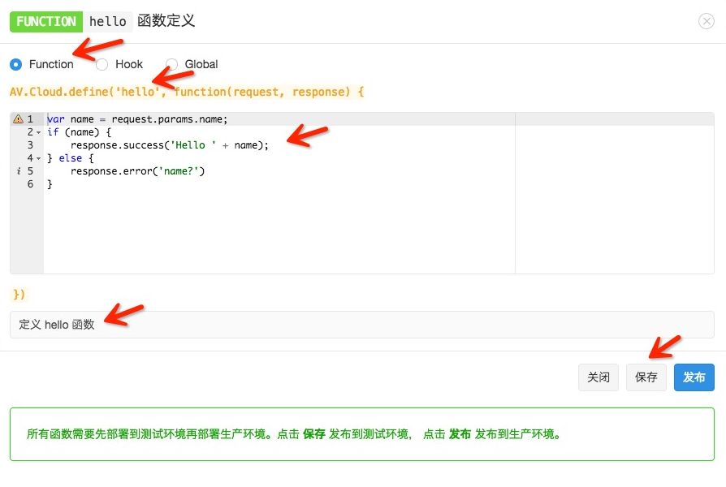
你需要设置的部分包括：
AV.Cloud.define(...)部分）你可以在代码框中填入下列代码：
若想发送 HTTP 请求，请参考下文的 发送 HTTP 请求。
点击保存后，云引擎会在后台编译、保存，并将代码部署到预备环境，这个过程可能需要十几秒钟的时间，请耐心等待。过程全部完成后，页面上方会提示「已更新到预备环境」；如果有错误（比如编译错误）则会出现类似提示：
加载代码出错: SyntaxError: Unexpected token )。发布
如果函数部署「预备环境」成功，就可以点击 发布 按钮将函数发布到「生产环境」。同样该过程可能需要十几秒钟的时间，请耐心等待。全部完成后，页面上方会提示「已发布到生产环境」。
同步
对于某个函数，可能生产环境运行一个版本，而预备环境正在开发一个新的版本，两个环境的代码是不一致的，这时函数列表页面相关函数的 预备环境 按钮会变成蓝色：
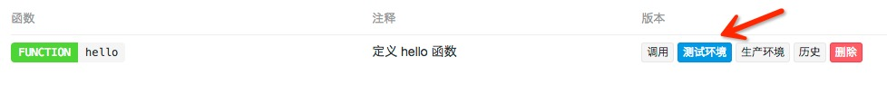
当你在预备环境开发完成，点击 发布 后，两个环境的代码将会统一，这时 预备环境 按钮变为灰色。
测试
如果需要测试，可以点击相应函数的 调用 按钮，你将看到如下窗口：
选择调用环境，并输入调用参数，点击「运行」按钮即可看到调用结果。如果调用返回的
Http Status Code不是200，则页面上方会提示相关错误信息。历史版本
如果你想看某个函数之前曾经部署过的代码，可以在函数列表页面点击 历史 按钮，将会弹出类似下面的窗口：
你可以点击时间来查看不同时间部署的代码。
删除
如果你确定某个函数已经不再需要，可以在函数列表页面点击 删除 按钮将其删除。删除后该函数和其所有历史记录都将被删除，而且不能恢复。删除动作会重新部署预备和生产环境，这个过程可能需要十几秒钟的时间，请耐心等待。
项目定义函数
如果你希望有更强的灵活性，或者希望使用主机托管功能实现自己的站点，甚至网站托管，你可以通过项目代码的方式管理自己的云引擎。
项目框架结构
其中，cloud 目录下有一个
main.js，这就是你的业务逻辑代码存放的地方，简单举个例子：这段代码定义了一个名为
hello的函数，它简单的返回应答Hello world!。global.json，包含了 appId 和 appKey 等项目信息。网站托管的项目框架结构
在
Cloud目录下多了app.js文件和\views目录：并且
cloud/main.js里还多了一行代码，用来加载 app.js：代码部署的过程请参考 部署。
项目约束
你的项目需要遵循一定格式才会被云引擎识别并运行。
云引擎 2.0 的项目必须有
$PROJECT_DIR/cloud/main.js文件，该文件为整个项目的启动文件。健康监测
云引擎项目在部署启动时，部署服务会对新启动的应用进行
ping监测（每隔 1 秒请求一次，一共 15 次），请求 URL 为/__engine/1/ping，如果响应的statusCode为200则认为新的节点启动成功，整个部署才会成功；否则会收到 应用启动检测失败 类型的错误信息，导致部署失败。云引擎 2.0 沙箱环境内置了该 URL 的处理，所以不需要做额外操作。
其他框架
因为云引擎 2.0 是运行在沙箱环境，所以不支持其他的 Web 框架。只能使用预定义的 Express 3.x。
部署
使用命令行工具部署
使用命令行工具可以非常方便地部署、发布应用，查看应用状态，查看日志，甚至支持多应用部署。具体使用请参考 命令行工具指南。
除此之外，还可以使用 git 仓库部署。你需要将项目提交到一个 git 仓库，我们并不提供源码的版本管理功能，而是借助于 git 这个优秀的分布式版本管理工具。我们推荐你使用 CSDN Code 平台、Github 或者 BitBucket 这样第三方的源码托管网站，也可以使用你自己搭建的 git 仓库（比如 gitlab.org）。
使用 CSDN Code 托管源码
CSDN Code 是国内非常优秀的源码托管平台，你可以使用这个平台提供公有仓库和有限的私有仓库完成对代码的管理功能。以下是该平台与 LeanCloud 云引擎结合的一个例子。
首先在 CSDN Code 上创建一个项目：
提示：在已经有项目代码的情况下，一般不推荐 使用 README 文件初始化项目。
接下来按照给出的提示，将源代码 push 到这个代码仓中：
我们已经将源码成功推送到 CSDN Code 平台，接下来到 LeanCloud 云引擎的管理界面填写下你的 git 地址（请注意，一定要填写以
git@开头的地址，我们暂不支持 https 协议 clone 源码）并点击 save 按钮保存：添加 deploy key 到你的 CSDN Code 平台项目上（deploy key 是我们云引擎机器的 ssh public key）保存到 项目设置 / 项目公钥 中，创建新的一项 avoscloud：
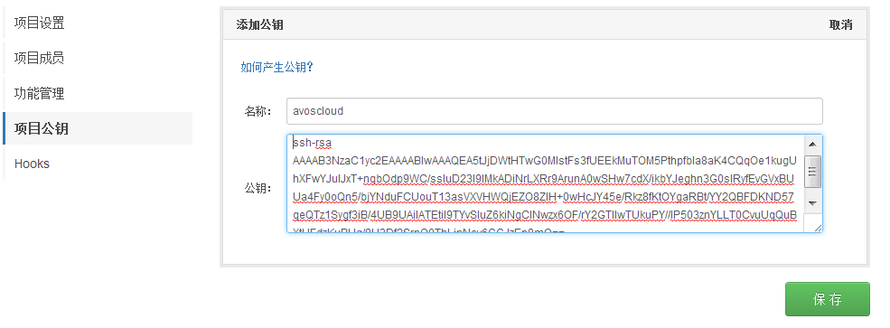
下一步，部署源码到预备环境，进入 云引擎 / Git 部署 菜单，点击「部署到开发环境」的部署按钮：
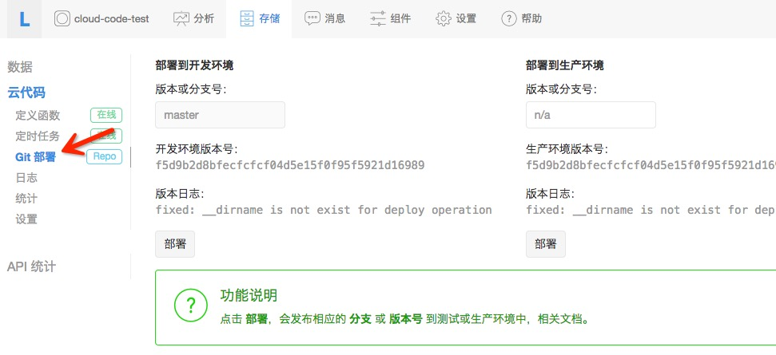
部署成功后，可以看到开发环境版本号从 undeploy 变成了当前提交的源码版本号。
使用 GitHub 托管源码
使用 BitBucket 与此类似，不再赘述。
Github 是一个非常优秀的源码托管平台，你可以使用它的免费账号，那将无法创建私有仓库（bucket 可以创建私有仓库），也可以付费成为高级用户，可以创建私有仓库。
首先在 Github上创建一个项目，比如就叫
test：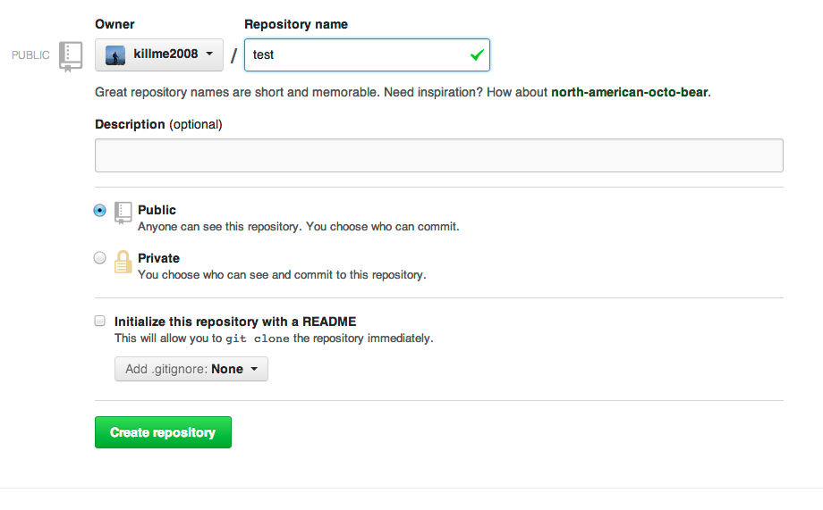
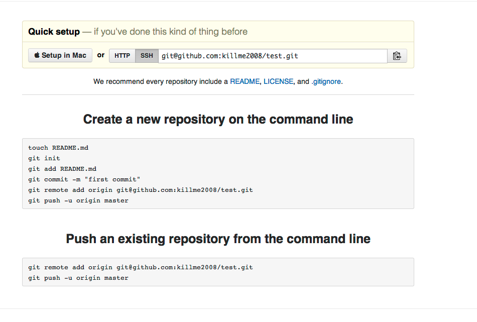
接下来按照 Github 给出的提示，我们将源码 push 到这个代码仓库：
到这一步我们已经将源码成功 push 到 Github，接下来到云引擎的管理界面填写下你的 git 地址（请注意，一定要填写以
git@开头的地址，我们暂不支持 https 协议 clone 源码）并点击 save 按钮保存：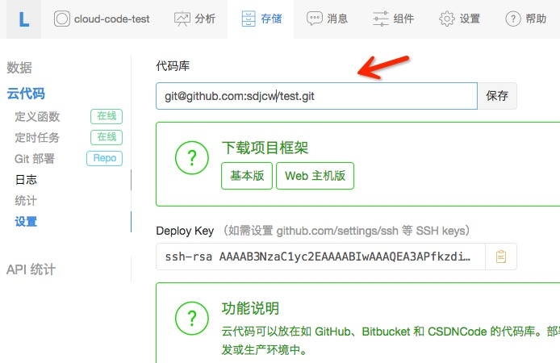
并添加 deploy key 到你的 github 项目（deploy key 是我们云引擎机器的 ssh public key），如果你是私有项目，需要设置 deploy key，
拷贝 设置 菜单里的 Deploy key 保存到 github setting 里的 deploy key，创建新的一项 avoscloud：
下一步，部署源码到预备环境，进入 云引擎 / Git 部署 菜单，点击 部署到开发环境 的部署按钮：
部署成功后，可以看到开发环境版本号从 undeploy 变成了当前提交的源码版本号。
Gitlab 无法部署问题
很多用户自己使用 Gitlab搭建了自己的源码仓库，有朋友会遇到无法部署到 LeanCloud 的问题，即使设置了 Deploy Key，却仍然要求输入密码。
可能的原因和解决办法如下：
!修改为*，原因参考 Stackoverflow - SSH Key asks for password，并重启 SSH 服务：sudo service ssh restart。其中最后 76 个字符：
就是 comment，删除这段字符串后的 deploy key（如果没有这个字样的comment无需删除）保存到 gitlab 即可正常使用：
定时任务
定时任务可以按照设定，以一定间隔自动完成指定动作，比如半夜清理过期数据，每周一向所有用户发送推送消息等等。定时任务的最小时间单位是秒，正常情况下时间误差都可以控制在秒级别。
原来提供的
AV.Cloud.setInterval和AV.Cloud.cronjob都已经废弃，这两个函数的功能变成和AV.Cloud.define一样，已经定义的任务会自动帮你做转换并启动。定时任务是普通的云函数。比如定义一个打印循环打印日志的任务
log_timer：部署云引擎之后，进入 控制台 > 存储 > 云引擎 > 定时任务，在右侧页面中选择 创建定时器，然后设定其所执行的函数名称、执行环境等等。
定时器创建后，其状态为未运行，需要点击 启用 来激活。之后其执行日志可以通过 其它 > 日志 查看。
定时任务分为两类：
以 Cron 表达式为例，比如每周一早上 8 点准时发送推送消息给用户：
创建定时器的时候，选择 Cron 表达式 并填入
0 0 8 ? * MON。Cron 表达式
Cron 表达式的基本语法为：
, - * /, - * /, - * /, - * ? / L W, - * /, - * ? / L #, - * /特殊字符的用法：
*<分钟>设为 *，表示每一分钟。?<日期>设为 10，<星期>设为 ?。-<小时>为 10-12，即10 点、11 点、12 点。,<星期>为 MON,WED,FRI，即周一、周三、周五。/<秒>设为 0/15，即从 0 秒开始，以 15 秒为增量，包括 0、15、30、45 秒；5/15 即 5、20、35、50 秒。*/ 与 0/ 等效，如<日期>设为 1/3，即从每个月的第一天开始，每 3 天（即每隔 2 天）执行一次任务。L<日期>中使用 L 代表每月最后一天，如 1 月 31 号、2 月 28 日（非闰年）；<星期>中单独使用 L，则与使用 7 或 SAT 等效，若前面搭配其他值使用，如 6L，则表示每月的最后一个星期五。注意，在 L 之前不要使用多个值或范围，如 1,2L、1-2L，否则会产生错误结果。
W<日期>为 15W 即离 15 号最近的非周末的一天；如果 15 号是周六，任务则会在 14 号周五触发，如果 15 号是周日，则在 16 号周一触发，如果 15 号是周二，则周二当天触发。<日期>为 1W，如果 1 号是周六，任务则会在 3 号周一触发，因为不能向前跨月来计算天数。在
<日期>中 W 之前只能使用一个数值，不能使用多个值或范围。LW 可在<日期>中组合使用，表示每月最后一个非周末的一天。#<星期>为 6#3 代表每月第三个周五，2#1 为每月头一个周一，4#5 为每月第五个周三；如果当月没有第五周，则 #5 不会产生作用。各字段以空格或空白隔开。JAN-DEC、SUN-SAT 这些值不区分大小写，比如 MON 和 mon 效果一样。更详细的使用方法请参考 Quartz 文档（英文）。
举例如下：
0 0/5 * * * ?10 0/5 * * * ?0 30 10-13 ? * WED,FRI0 0/30 8-9 5,20 * ?错误信息
定时器执行后的日志会记录在 控制台 > 存储 > 云引擎 > 其它 > 日志 中，以下为常见的错误信息及原因。
某个定时器触发的云函数，因 15 秒内没有响应而超时。
某个定时器触发的云函数，因为太多次超时而停止触发。
资源限制
权限说明
云引擎可以有超级权限，使用 master key 调用所有 API，因此会忽略 ACL 和 Class Permission 限制。你只需要使用下列代码来初始化 SDK：
如果在你的服务端环境里也想做到超级权限，也可以使用该方法初始化。
注意：云引擎 2.0 版本已经默认使用 master key 初始化 SDK，所以不需要额外初始化。
定时器数量
生产环境和预备环境的定时器数量都限制在 5 个以内，也就是说你总共最多可以创建 10 个定时器。
超时
请求云引擎上的云函数时会经过负载均衡设备，该设备会限制一次请求的超时时间为 15 秒，如果超过 15 秒没有返回，请求将被强制停止，但此时云引擎的方法可能仍在执行，但执行完毕后的响应是无意义的。所有 Hook 函数，如
beforeSave和afterSave的超时时间限制在 3 秒内。如果 Hook 函数被其他的云函数调用（比如因为 save 对象而触发beforeSave和afterSave），那么它们的超时时间会进一步被其他云函数调用的剩余时间限制。例如，如果一个beforeSave函数是被一个已经运行了 13 秒的云函数触发，那么beforeSave函数就只剩下 2 秒的时间来运行，而正常情况下是 3 秒的限制。网站托管的动态请求超时也被限定为 15 秒。
日志
云引擎 / 日志，可以查看云引擎的部署和运行日志，还可以选择查看的日志级别：
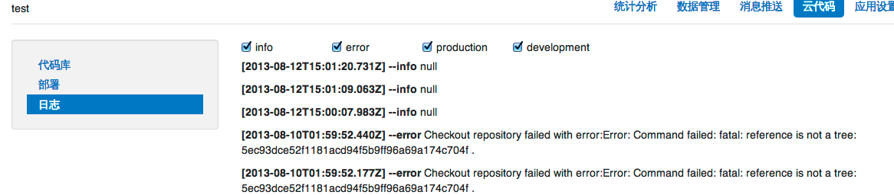
如果你想打印日志到里面查看，可以直接输出到「标准输出」或者「标准错误」，这些信息会分别对应日志的
info和error级别，比如下列代码会在 info 级别记录参数信息：注意：日志单行最大 4096 个字符，多余部分会被丢弃；日志输出频率大于 600 行/分钟，多余的部分会被丢弃。
网站托管
很多时候，除了运行在移动设备的应用之外，你通常也会为应用架设一个网站，可能只是简单地展现应用的信息并提供 App Store 或者 Play 商店下载链接，或者展示当前热门的用户等等。你也可能建设一个后台管理系统，用来管理用户或者业务数据。
这一切都需要你去创建一个 web 应用，并且从 VPS 厂商那里购买一个虚拟主机来运行 web 应用，你可能还需要去购买一个域名。
不过现在，云引擎为你提供了网站托管功能，可以让你为应用设置一个二级域名
${your_app_domain}.leanapp.cn（美国区为${your_app_domain}.avosapps.us），并把你的 web 应用部署到该域名之下运行，同时支持静态资源和动态请求服务。设置域名
首先，你需要到 云引擎 / 设置 页面找到 Web 主机域名，在这里填写你的域名：
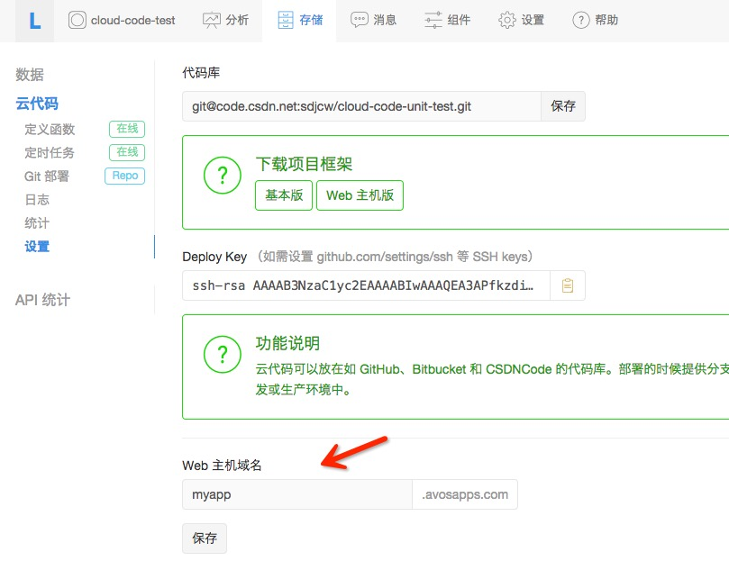
上面将应用的二级域名设置为 myapp，设置之后，你应该可以马上访问：
可能因为 DNS 生效延迟暂时不可访问，请耐心等待或者尝试刷新 DNS 缓存，如果还没有部署，你看到的应该是一个 404 页面。
域名备案
备案之前要求云引擎已经部署，并且网站内容和备案申请的内容一致。仅使用云引擎托管静态文件、未使用其他 LeanCloud 服务的企业用户，需要自行完成域名备案工作。
如果需要备案，进入 应用控制台 > 账号设置 > 域名备案，按照步骤填写资料即可。
域名绑定
国内节点绑定独立域名需要有 ICP 备案，只有主域名需要备案，二级子域名不需要备案；如果没有 ICP 备案，请参考 域名备案。
如果需要域名绑定，进入 应用控制台 > 账号设置 > 域名绑定，按照步骤填写资料即可。
使用框架
静态资源
public目录下的资源将作为静态文件服务，例如，public/index.html就可以通过http://${your_app_domain}.leanapp.cn/index.html访问到这个文件。通常，你会将资源文件按照类型分目录存放，比如 css 文件放在
stylesheets目录下，将图片放在images目录下，将 javascript 文件放在js目录下，云引擎同样能支持这些目录的访问。例如，
public/stylesheets/app.css可以通过http://${your_app_domain}.leanapp.cn/stylesheets/app.css访问到。在你的HTML文件里引用这些资源文件，使用相对路径即可，比如在
public/index.html下引用app.css：默认静态资源的
Cache-Control是max-age=0，这样在每次请求静态资源的时候都会去服务端查询是否更新，如果没有更新返回 304 状态码。你还可以在app.listen的时候传入选项，设置静态资源的 maxAge：请注意
maxAge的单位是毫秒，这样 cache-control 头会变成max-age=604800。更多 static 选项参考 static middleware。动态请求
如果只是展现静态资源，你可能使用 Github Pages 类似的免费服务也能做到，但是云引擎提供的网站托管功能同时支持动态请求。这是通过编写 Node.js 代码，基于express.js 这个 Web MVC 框架做到的。
请参考 express.js 官方文档 框架来学习。
在下载的项目框架
cloud/app.js中，我们可以看到一个初始代码：我们使用
ejs模板来渲染 view，默认的模板都放在views目录下，比如这里hello.ejs:简单地显示 message 内容。你还可以选用 jade 这个模板引擎：
你可以参照上面的 部署 章节来部署这个框架代码，部署成功之后，直接可以访问
http://${your_app_domain}.leanapp.cn/hello将看到展示的 message：更多复杂的路由和参数传递，请看 express.js 框架文档。
我们还提供了一个在线 Demo：http://myapp.leanapp.cn/，源码 开放供大家参考。
自定义 404 页面
自定义 404 页面在云引擎里比较特殊，假设我们要渲染一个 404 页面，必须将下列代码放在
app.listen()之后：获取客户端 IP
如果你想获取客户端的 IP，可以直接从用户请求的 HTTP 头的
x-real-ip字段获取。上传文件
在云引擎里上传文件也很容易，首先配置应用使用 bodyParser 中间件，它会将上传表单里的文件存放到临时目录并构造一个文件对象放到 request.files 里：
使用表单上传文件，假设文件字段名叫 iconImage：
上传文件使用 multipart 表单，并 POST 提交到
/upload路径下。接下来定义文件上传的处理函数，使用受到严格限制并且只能读取上传文件的
fs模块：上传成功后，即可在数据管理平台里看到你所上传的文件。
处理用户登录和登出
假设你创建了一个支持 web 主机功能的云引擎项目，在 app.js 里添加下列代码：
使用
express.cookieParser中间件启用 cookieParser，注意传入一个 secret 用于 cookie 加密（必须）。然后使用require('avos-express-cookie-session')导入的 avosExpressCookieSession 创建一个 session 存储，它会自动将 AV.User 的登录信息记录到 cookie 里，用户每次访问会自动检查用户是否已经登录，如果已经登录，可以通过req.AV.user获取当前登录用户。avos-express-cookie-session支持的选项包括：req.AV.user当前用户的 id 属性，你可以在必要的时候 fetch 整个用户。通常保持默认的 false 就可以。avos.sess。注意：我们通常不建议在云引擎环境中通过
AV.User.current()获取登录用户的信息，虽然这样做不会有问题，也不会有串号的风险，但由于这个功能依赖 Node.js 的 Domain 模块，而 Node.js 4.x 已经不推荐使用 Domain 模块了，所以在云引擎中获取 currentUser 的机制后续会发生改变。因此，我们建议：request.user获取用户信息。req.AV.user获取用户信息。登录很简单：
登录页面大概是这样
login.ejs：注意： express 框架的
express.session.MemoryStore在云引擎中是无法正常工作的，因为云引擎是多主机多进程运行，因此内存型 session 是无法共享的，建议用 express.js · cookie-session 中间件。自动重定向到 HTTPS
为了安全性，我们可能会为网站加上 HTTPS 加密传输。我们的云引擎支持网站托管，同样会有这样的需求。
因此我们在云引擎中提供了一个新的 middleware 来强制让你的
${your_app_domain}.leanapp.cn的网站通过 https 访问，你只要这样：部署并发布到生产环境之后，访问你的云引擎网站二级域名都会强制通过 HTTPS 访问。
预备环境和开发环境
前面已经谈到云引擎的预备和生产环境之间的区别，可以通过 HTTP 头部
X-LC-Prod来区分。但是对于网站托管就没有办法通过这个 HTTP 头来区分了。因此，我们其实为每个应用创建了两个域名，除了
${your_app_domain}.leanapp.cn之外，每个应用还有stg-${your_app_domain}.leanapp.cn域名作为预备环境的域名。部署的测试代码将运行在这个域名之上，在测试通过之后，通过菜单 部署 > 部署到生产环境 按钮切换之后，可以在
${your_app_domain}.leanapp.cn看到最新的运行结果。第三方平台接入
因为云引擎提供了主机托管功能，这相当于为你在互联网上提供了一台简单的 VPS（虚拟主机），你可以用它接入第三方平台（很多第三方平台需要你有回调服务器），完成一些特定的工作。
接入支付宝
通过 cloud-code-alipay 示例 了解如何接入支付宝，实现「即时到账收款」的功能。
接入微信
通过 cloud-code-weixin 示例 了解如何接入微信，实现「开发者认证」和「自动回复」的功能。
运行环境区分
云引擎区分「预备环境」和「生产环境」，两个环境虽然使用 不同的二级域名，但是使用相同的数据源。代码在预备环境测试通过后，再部署到生产环境是更安全的做法。
有些时候你可能需要知道当前云引擎运行在什么环境（开发环境、预备环境或生产环境），从而做不同的处理：
你应该注意到了，我们在请求云引擎的时候，通过 REST API 的特殊的 HTTP 头
X-LC-Prod，来区分调用的环境。具体到 SDK 内的调用，请看各个平台的 SDK 指南。
有些时候请求云引擎时会提示 production 还没有部署：
这个错误通常是只是部署了预备环境。通过点击菜单 Git 部署 / 部署到生产环境 / 部署，可以将开发环境的当前版本的代码部署到生产环境：
模块
云引擎 2.0 支持将 JavaScript 代码拆分成各个模块。为了避免加载模块带来的不必要的副作用，云引擎模块的运作方式和 CommonJS 模块类似。当一个模块被加载的时候，JavaScript 文件首先被加载，然后执行文件内的源码，并返回全局的 export 对象。例如，假设
cloud/name.js包含以下源码：然后在
cloud/main.js包含下列代码片段：提示，你可以利用
console.log来打印这几个调用的返回值到日志，在 控制台 / 存储 / 云引擎 / 日志 中查看。name 模块包含一个名为
isACoolName的函数。require接收的路径是相对于你的云引擎项目的根路径，并且只限cloud/目录下的模块可以被加载。可用的第三方模块
因为云引擎 1.0 运行在沙箱环境，我们只允许使用部分类库，名单如下：
上面这些模块都可以直接 require 使用。我们还提供受限制的
fs文件模块，仅可以读取上传文件目录下的文件。云引擎 2.0 开始将没有模块限制，但是上述必选的模块仍然将优先使用云引擎环境中使用的版本。
时区问题
因为某些原因，云引擎 2.0 默认使用的是 UTC 时间，这给很多开发者带来了困惑，所以我们着重讨论下时区问题。
比如有这样一个时间：
2015-05-05T06:15:22.024Z(ISO 8601 表示法)，最后末尾的Z表示该时间是 UTC 时间。上面的时间等价于：
2015-05-05T14:15:22.024+0800，注意此时末尾是+0800表示该时间是东八区时间。这两个时间的「小时」部分相差了 8 小时。时区问题产生的原因
很多开发者在时间处理上会忽略「时区」标志，导致最后总是莫名其妙的出现 8 小时的偏差。
【场景一】某开发者开发的应用使用云引擎的主机托管功能做了一个网站，其中有时间格式的表单提交。某用户使用浏览器访问该网站，提交表单，时间格式为：
2015-05-05 14:15:22.024，注意该时间没有「时区」标志。因为这个时间是浏览器生成的，而该用户浏览器上的时间通常是东八区时间，所以该业务数据希望表达的时间是「东八区的 14 点」。该时间
2015-05-05 14:15:22.024提交到服务器，被转换为 Date 类型（JavaScript 代码：new Date('2015-05-05 14:15:22.024')）。因为云引擎 2.0 使用的是 UTC 时间，所以该时间会被处理为2015-05-05T14:15:22.024Z，即「UTC 时间的 14 点」。导致最后获得的时间和期望时间相差了 8 小时。解决上面的办法很简单：时间格式带上时区标志。即浏览器上传时间时使用
2015-05-05T14:15:22.024+0800，这样不管服务端默认使用什么时区，带有时区的时间格式转换的 Date 都不会有歧义。【场景二】从数据库获取某记录的
createdAt属性，假设值为：2015-04-09T03:35:09.678Z。因为云引擎默认时区是 UTC，所以一些时间函数的返回结果如下：toISOStringtoLocaleStringtoUTCStringtoStringgetHours如果需要获取小时数据，解决办法是使用第三方的组件，比如 moment-timezone，通过下面的方式可以获得东八区的小时时间：
云引擎 2.0 和云引擎时区的差异
为了方便大家的使用，更加符合通常的习惯，云引擎运行时环境（无沙箱的 Node.js 环境和 Python 环境）都是使用东八区作为默认时区。当然，我们仍然建议程序的时间字符串带有时区标志。
升级到云引擎 2.0
2014 年 8 月 14 号，云引擎推出 2.0 版本，其最主要特性包括可以自由添加和使用三方类库以及去除一些对模块的限制。2014 年 8 月 14 号以后创建的应用都将使用云引擎 2.0 版本。
package.json配置文件，下面是一个简单的样例：需要注意的是，云引擎 2.0 运行环境默认包含一些组件，如果
package.json指定明确版本则以用户自定义的为准，否则使用下面的默认版本：注意：
express目前只支持3.4.x版本，即使package.json指定其他版本也是无效的。在以上问题都确认后，就可以进行升级动作。升级操作完成后，因为缓存的原因，需要等待最多 5 分钟，平台将自动迁移完成。在迁移过程中服务不会暂停，请不用担心。
最新特性
fs等官方模块的限制取消了。views目录不再需要分成两个目录（cloud/views和cloud/dev_views）